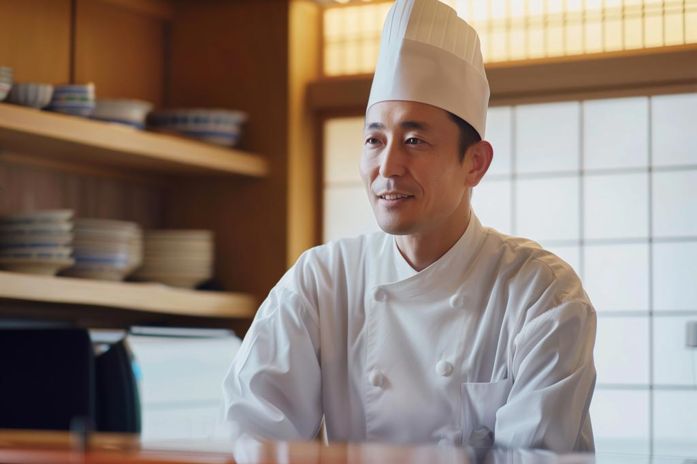
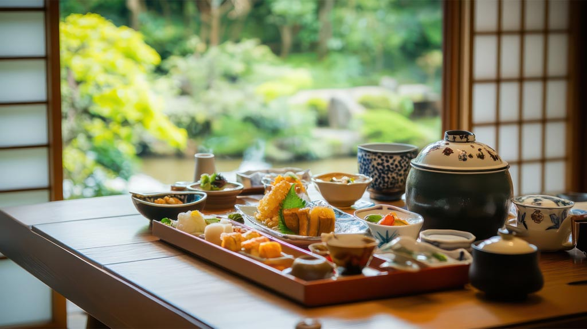
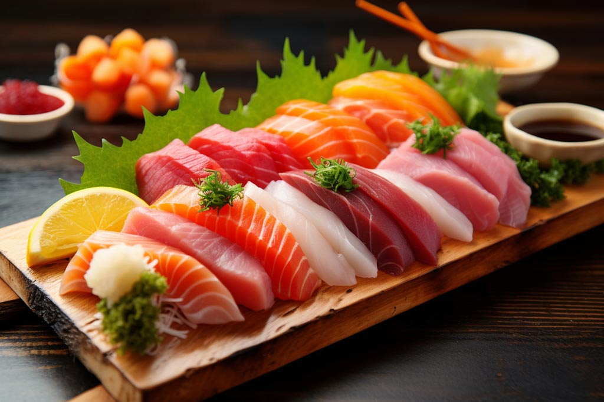
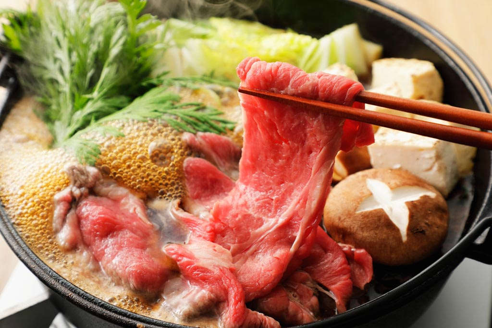
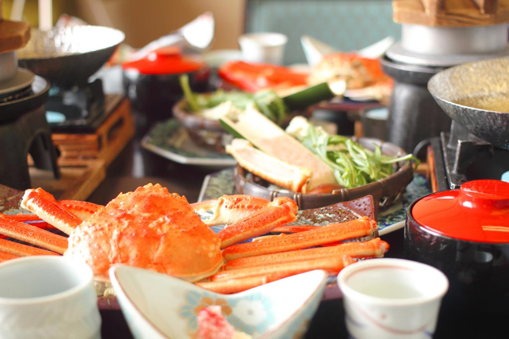
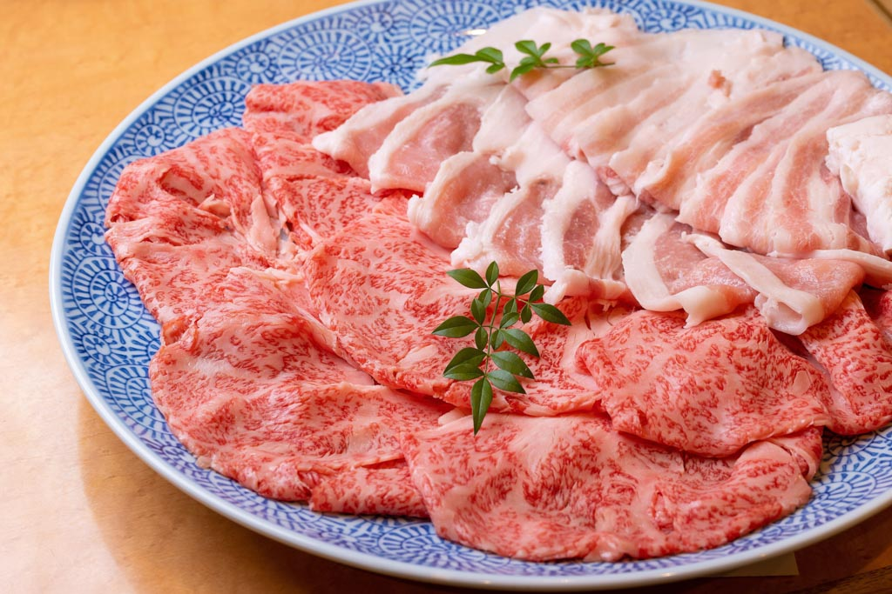
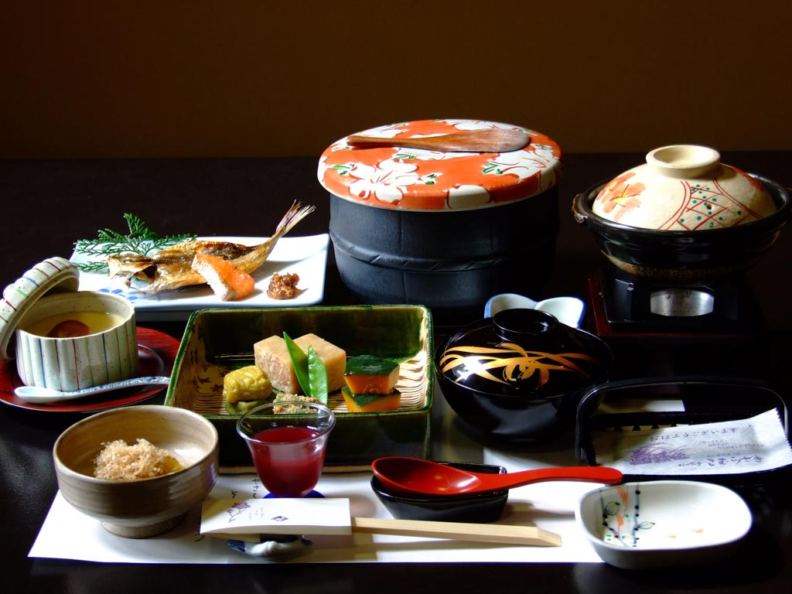
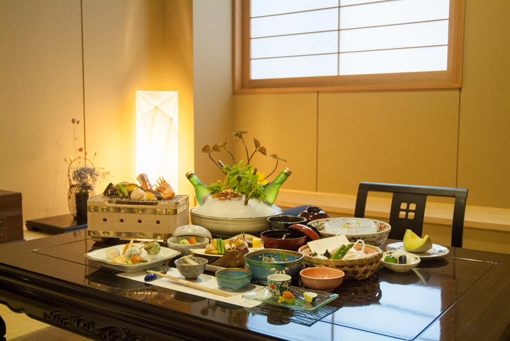
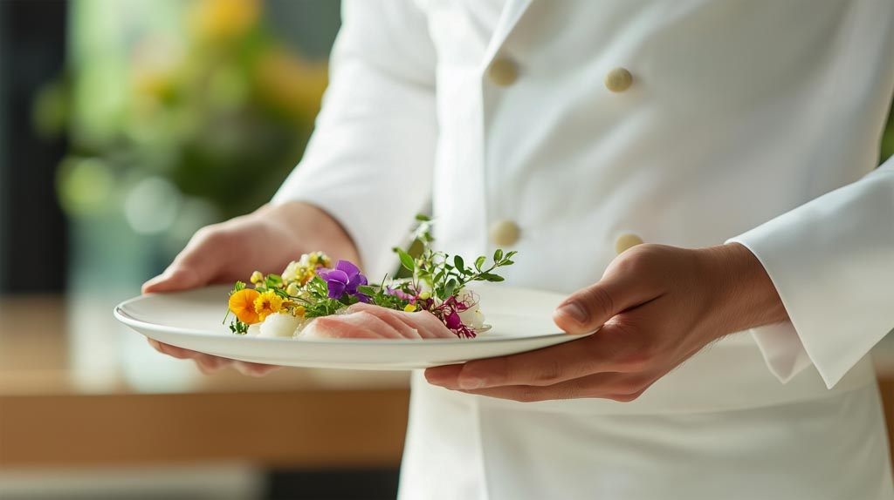
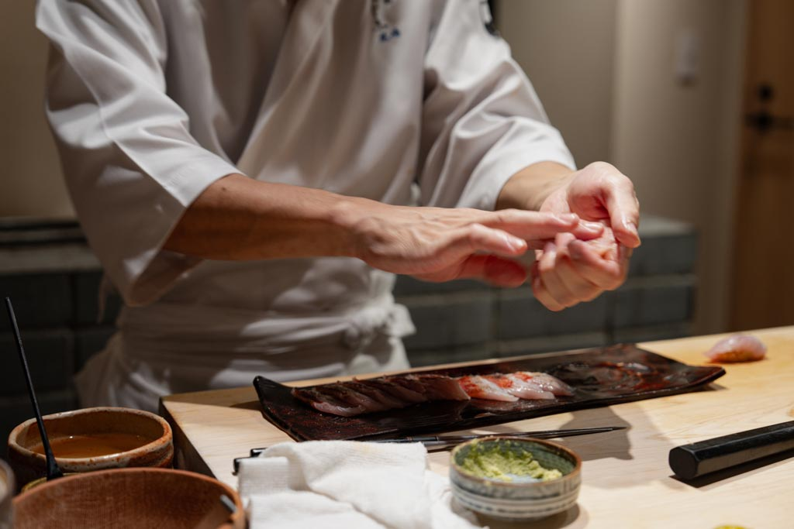

料理への想い
旬の食材に込められた自然の恵みを大切に、
一期一会の美味を創り上げます。
当館の料理長が厳選した地元の新鮮な食材と、 代々受け継がれてきた伝統の技法で、 お客様に特別なひとときをお届けいたします。 季節の移ろいを五感で感じていただける会席料理を、 心を込めてご用意いたします。

季節の会席料理

春の会席
3月〜5月
主な献立
- 桜鯛の薄造り
- 筍の土佐煮
- 山菜の天ぷら
- 桜餅

夏の会席
6月〜8月
主な献立
- 鮎の塩焼き
- 冷製茶碗蒸し
- 夏野菜の炊き合わせ
- 水羊羹

秋の会席
9月〜11月
主な献立
- 松茸の土瓶蒸し
- 柿の白和え
- 秋刀魚の塩焼き
- 栗蒸し羊羹

冬の会席
12月〜2月
主な献立
- 河豚ちり
- 牡蠣の酒蒸し
- 蟹すき鍋
- ぜんざい
特別料理

極上和牛会席
最高級の和牛を使用した特別なコース。とろけるような肉質と上品な味わいをお楽しみください。
お一人様 +8,000円

記念日会席
お誕生日や記念日などの特別な日に。華やかな盛り付けでお祝いの気持ちを込めてお作りいたします。
お一人様 +5,000円
ご朝食

心温まる和朝食
地元の新鮮な食材を使用した、身体にやさしい和朝食をご用意いたします。 炊きたてのご飯、出汁の効いたお味噌汁、季節の小鉢など、 一日の始まりにふさわしい、心温まるお食事をお楽しみください。
朝食内容
- 炊きたて白米（地元産コシヒカリ）
- 赤だし味噌汁
- 焼き魚（季節による）
- 玉子焼き
- 季節の小鉢3品
- お漬物
- 海苔・のり佃煮
菜の花や 月は東に 日は西に
料理人のご紹介

料理長 佐藤 健一
京都の老舗料亭で15年間修行を積み、当館に参りました。 伝統の技法を大切にしながら、現代の感性も取り入れた 新しい日本料理の世界をお客様にお届けいたします。

副料理長 田村 美咲
地元出身で、この土地の食材を知り尽くしております。 季節の移ろいを大切にし、お客様に喜んでいただける 心のこもった料理作りを心がけております。
地元食材へのこだわり
恵み一つ一つ
心込めて
当館では地元の契約農家から直接仕入れた新鮮な食材を使用しております。
四季折々の山の幸、川の幸を活かした料理で、
この土地ならではの味覚をお楽しみいただけます。
主な地元食材
- 山菜：わらび、ぜんまい、こごみ、たらの芽
- 川魚：鮎、岩魚、山女魚
- 野菜：朝採れ野菜、季節の根菜類
- 米：地元産コシヒカリ（契約農家直送）
- きのこ：松茸、しいたけ、舞茸